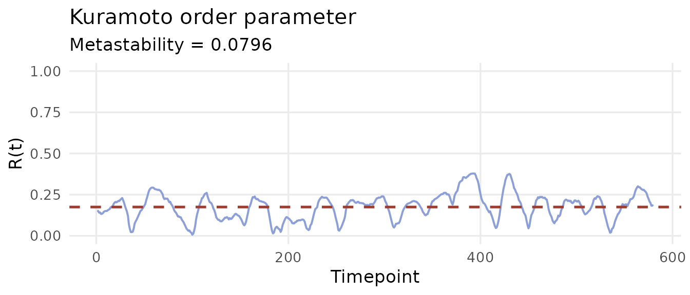
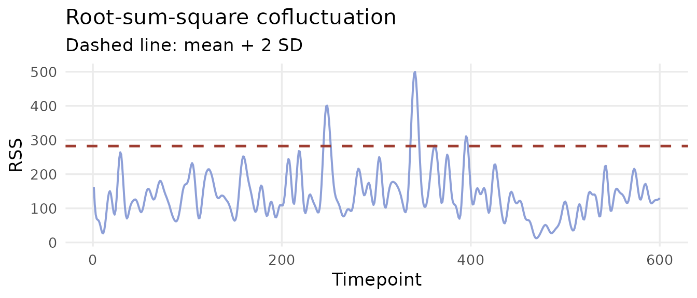

What is dynamic functional connectivity?
Resting-state fMRI measures the BOLD signal across brain regions over time. Static functional connectivity (FC) compresses this into a single correlation matrix — the time-averaged co-activation pattern across the entire scan. Convenient, but it discards everything that changes.
Dynamic functional connectivity (dynFC) treats the time dimension seriously. It asks: does the pattern of co-activation between brain regions shift during a scan, and can those shifts tell us something about cognition, clinical state, or neural mechanisms?
dynR computes dynFC representations from preprocessed
BOLD timeseries, implementing two complementary families of methods:
| Family | Core functions | What it captures |
|---|---|---|
| Phase-based |
hilbert_phases(), dyn_phase_lock(),
kuramoto()
|
Instantaneous synchrony via the analytic signal |
| Correlation-based |
corr_slide(), cofluct(),
corr_corr()
|
Windowed co-activation and edge dynamics |
Both families produce outputs that feed directly into stateR for
brain state quantification.
When to use which approach
Choosing between phase-based and correlation-based methods depends on your research question:
| Phase-based | Correlation-based | |
|---|---|---|
| Temporal resolution | Frame-by-frame (no window needed) | One estimate per window |
| Feature dimensionality | N (one eigenvector per timepoint) | N(N−1)/2 (upper triangle) |
| Window length choice | Not required | Critical parameter |
| Best for | Synchrony research, tractable state clustering, metastability | Interpretable FC, task-event alignment, edge dynamics |
If you are new to dynFC, the phase-based / LEiDA pipeline is a good starting point: it requires no window length decision and produces compact, interpretable features. Sliding-window FC is more directly comparable to the broader published literature and easier to relate to task structure or behavioural events.
Package data
dynR ships with a resting-state BOLD timeseries from the
edge-ts
repository (Faskowitz et al., 2020), parcellated into 200 regions of
interest. This dataset is used throughout all three vignettes.
data(ts) # [200 × 600] BOLD timeseries
data(fc) # [200 × 200] static FC matrix (ground truth)
dim(ts)
#> [1] 200 600
dim(fc)
#> [1] 200 200200 parcels, 600 timepoints — approximately 20 minutes at TR = 2 s.
Pipeline overview
BOLD timeseries [N × Tmax]
│
├─── bandpass_filter() optional: restrict to 0.01–0.1 Hz
│
├─── PHASE-BASED ─────────────────────────────────────────────
│ hilbert_phases() → instantaneous phases [N × Tmax]
│ dyn_phase_lock() → dPL matrices + LEiDA eigenvectors
│ kuramoto() → synchrony, metastability, entropy
│
└─── CORRELATION-BASED ───────────────────────────────────────
corr_slide() → FC matrices [N × N × windows]
cofluct() → edge time series + RSS
corr_corr() → FC recurrence [Tmax × Tmax]
│
▼
stateR ── fractional occupancy
── dwell time
── Markov transitionsQuick example: phase-based pipeline
# Instantaneous phases via the Hilbert transform
phases <- hilbert_phases(ts)
# Dynamic phase-locking matrices + LEiDA eigenvectors
dpl <- dyn_phase_lock(phases)
cat("LEiDA matrix:", nrow(dpl$leida), "timepoints ×",
ncol(dpl$leida), "parcels\n")
#> LEiDA matrix: 580 timepoints × 200 parcels
# Kuramoto order parameter
kop <- kuramoto(phases)
cat("Metastability:", round(kop$metastability, 4), "\n")
#> Metastability: 0.0796
ggplot(data.frame(t = seq_along(kop$synchrony), R = kop$synchrony),
aes(x = t, y = R)) +
geom_line(colour = "#8D9FD7", linewidth = 0.7) +
geom_hline(yintercept = mean(kop$synchrony),
colour = "#9E3C30", linetype = "dashed", linewidth = 0.9) +
scale_y_continuous(limits = c(0, 1)) +
labs(x = "Timepoint", y = "R(t)",
title = "Kuramoto order parameter",
subtitle = paste0("Metastability = ",
round(kop$metastability, 4))) +
theme_minimal(base_size = 13) +
theme(panel.grid.minor = element_blank())
Quick example: correlation-based pipeline
# Sliding-window FC: 30-timepoint windows, step 5
sw <- corr_slide(ts, window = 30, step = 5)
cat("Windows:", dim(sw$corr_mats)[3], "\n")
#> Windows: 115
# Edge-centric cofluctuations
ec <- cofluct(ts)
cat("Edges:", nrow(ec$edge_ts), "× Timepoints:", ncol(ec$edge_ts), "\n")
#> Edges: 19900 × Timepoints: 600
ggplot(data.frame(t = seq_along(ec$rss), rss = ec$rss),
aes(x = t, y = rss)) +
geom_line(colour = "#8D9FD7", linewidth = 0.7) +
geom_hline(yintercept = mean(ec$rss) + 2 * sd(ec$rss),
colour = "#9E3C30", linetype = "dashed", linewidth = 0.9) +
labs(x = "Timepoint", y = "RSS",
title = "Root-sum-square cofluctuation",
subtitle = "Dashed line: mean + 2 SD") +
theme_minimal(base_size = 13) +
theme(panel.grid.minor = element_blank())
Sanity check: single window equals static FC
A single window spanning the full timeseries must recover the static FC matrix exactly — a useful first validation for any new dataset.
full_window <- corr_slide(ts, window = ncol(ts))
max_diff <- max(abs(full_window$corr_mats[, , 1] - fc))
cat("Max deviation from static FC:", formatC(max_diff, format = "e"), "\n")
#> Max deviation from static FC: 8.8818e-16Further reading
-
vignette("phase-based-fc")— Hilbert transform, LEiDA, K-means, and the Kuramoto order parameter in depth -
vignette("sliding-window-fc")— window length trade-offs, edge cofluctuations, and FC recurrence -
stateR— downstream brain state metrics
References
Faskowitz, J. et al. (2020). Edge-centric functional network representations of human cerebral cortex reveal overlapping system-level architecture. Nature Neuroscience, 23(12), 1644–1654. https://doi.org/10.1038/s41593-020-00719-y